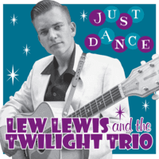

Lew Lewis and the Twilight Trio - Just Dance (EP, 2015)
01 - If You're Gonna Love Me (2:39)
02 - (She Make's Me Feel Like) I Wanna Fly (2:47)
03 - What Might Have Been! (2:52)
04 - Blow My Mind (2:30)
© Western Star Recording Company :: [WSRC EP09]
Notes
Review
021/366 (Project 366)
Authentic rockin' and rollin' Rock-A-Billy with a gentle and candy voice! Well, really groovin' tunes. Streamlined enough. Double bass is sweet. Guitar is magic.
Quietly but goes and goes to be a bit wild with a clear rhythm. Especially how it is with the first track "If You're Gonna Love Me" where slightly neon and urban mood goes be so twisting and rocking. The second track "(She Make's Me Feel Like) I Wanna Fly" with double bass mainline and with amazingly voiced vocals! Also roaring guitar and even a bit squeaky. The composition is quite simple, straightforward but very harmoniously sounding in one stream of the chosen tempo and smoothness. Chanted and stretched overtones with obvious priority rhythm. Arrangements with good pauses and overal it is a cool song. It does not make me fly, though. In contrast to previous tracks, the third one "What Might Have Been!" sounds so sentimental and twisting, slightly rustic and with a poetic motive! So good for such a melodious groove with good solos and strict drums. Then rollin' with the fourth track "Blow My Mind". Rockin' ballad. Voice is more mysterious there. And song itself with very cool whips and chanting style.
So, the songs are at a fairly unhurried pace, albeit powerfully sounding with full rockin' roll. Furthermore, compositions are pretty beautiful and stories are well composed. A characteristic feature is an enchanting voice with a strict instrumental rhythm. "Just Dance" is conceptually good, with old fashioned gloss and a diverse style of playing the guitar. The overall sound of the EP creates an enthusiastic feeling and will not let you get bored.